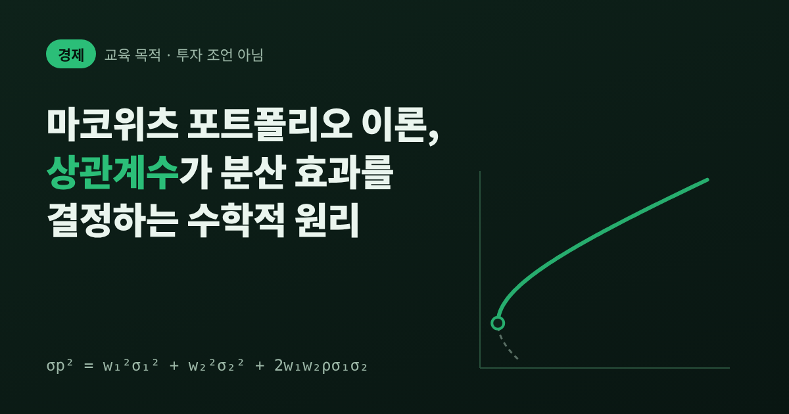
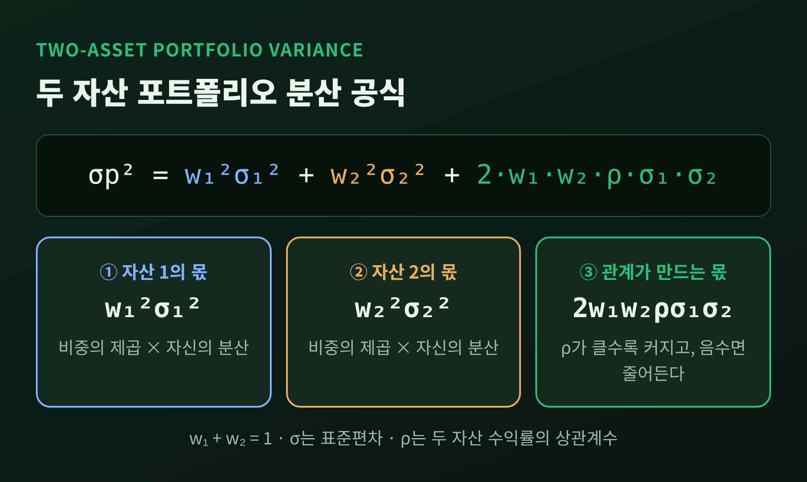
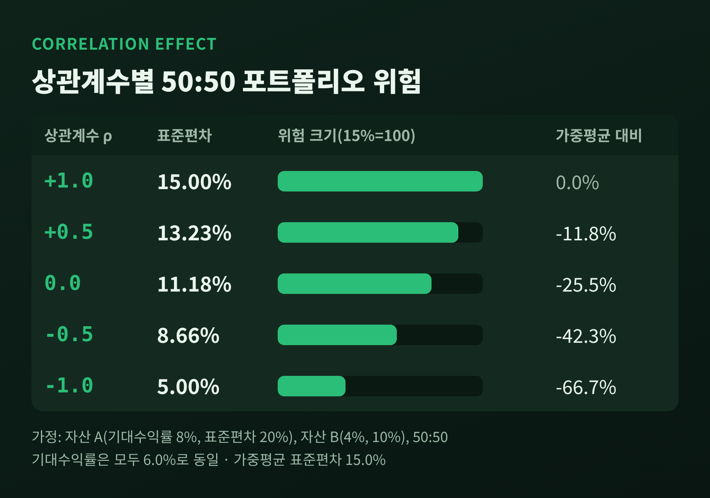
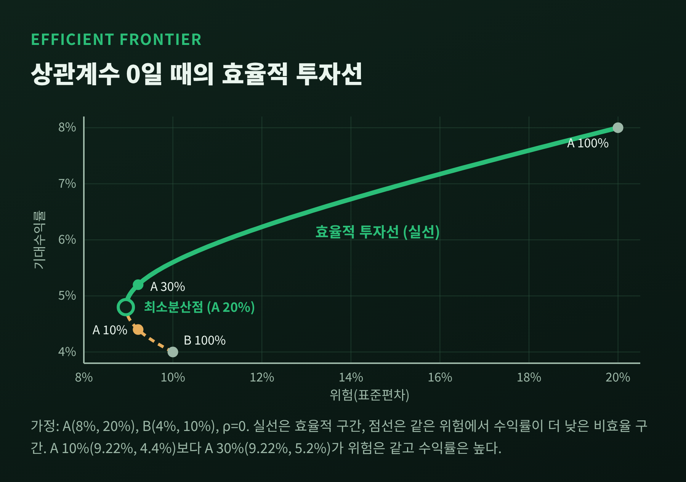
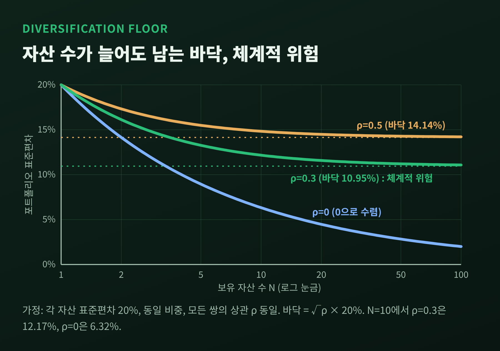
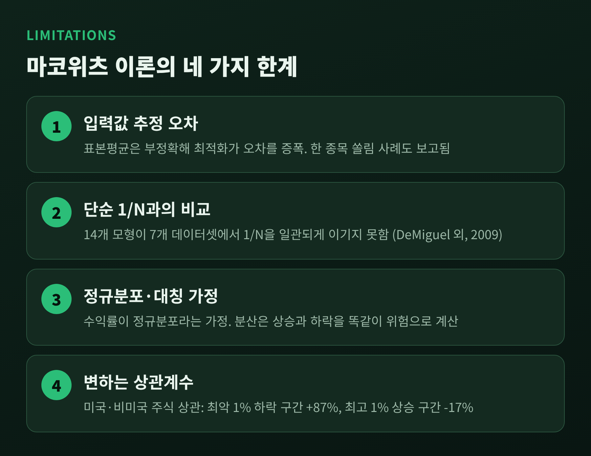

이 글은 경제학 개념을 설명하는 교육 목적의 글입니다. 특정 종목·상품의 추천이나 투자 권유가 아니며, 투자 조언이 아닙니다. 본문의 수치 예시는 원리를 보여 주려고 제가 가정한 숫자로, 실제 자산의 성과와 무관합니다.
오늘은 마코위츠의 현대 포트폴리오 이론이 분산투자를 어떻게 수학으로 설명하는지 이야기해 보려 합니다.
핵심은 두 자산을 섞었을 때 위험이 얼마나 줄어드는지를 상관계수가 정한다는 점입니다.
두 자산 포트폴리오 분산 공식, 효율적 투자선, 체계적 위험과 비체계적 위험, 그리고 이 이론의 한계까지 차례로 정리하겠습니다.
세 줄 요약
해리 마코위츠는 1952년 3월 「The Journal of Finance」에 "Portfolio Selection"이라는 논문을 실었습니다. 당시 그의 나이는 24세였습니다.
출발점은 기존의 주가 현재가치 모형에 위험 분석이 빠져 있다는 문제의식이었다고 전해집니다.
이 이론은 1990년 노벨 경제학상으로 이어졌습니다. 머튼 밀러, 윌리엄 샤프와 함께 받았고, 수상 사유는 "금융경제학 이론에 대한 선구적 연구"였습니다.
노벨위원회 보도자료는 그의 핵심을 이렇게 요약합니다. 포트폴리오 선택은 "기대수익률과 그 분산"이라는 두 차원의 균형으로 환원된다는 것입니다.
그리고 한 자산의 위험에서 본질적인 부분은 그 자산을 따로 떼어 본 위험이 아니라고 설명합니다.
포트폴리오 위험은 모든 자산 쌍의 공분산에 달려 있다는 뜻입니다.
예전에는 "위험한 자산을 줄이는 것"이 위험 관리였습니다. 마코위츠 이후에는 "자산들이 서로 어떻게 움직이는가"가 질문이 되었습니다.
두 자산을 비중 w₁, w₂(합은 1)로 섞은 포트폴리오의 분산은 다음과 같습니다.
σp² = w₁²σ₁² + w₂²σ₂² + 2·w₁·w₂·ρ·σ₁·σ₂
여기서 σ는 각 자산의 표준편차, ρ는 두 자산 수익률의 상관계수입니다. 마지막 항이 핵심입니다.
앞의 두 항은 자산을 따로 담았을 때의 위험이고, 마지막 항이 둘의 관계가 만드는 몫입니다.

공식에서 ρ만 움직여 보겠습니다. 설명을 위해 자산 A(기대수익률 8%, 표준편차 20%)와 자산 B(기대수익률 4%, 표준편차 10%)를 가정하고, 반반 섞습니다.
이 포트폴리오의 기대수익률은 6.0%이고, 두 표준편차의 가중평균은 15.0%입니다.
기대수익률은 6.0%로 그대로인데 위험만 15.00%에서 5.00%까지 움직였습니다. 같은 수익률을 두고 위험이 달라지는 것, 이것이 분산 효과의 정체입니다.

ρ = −1인 경우에는 분산이 (w₁σ₁ − w₂σ₂)²로 정리됩니다. 그래서 w₁σ₁ = w₂σ₂가 되는 비중을 찾으면 위험을 0으로 만들 수 있습니다.
위 예시에서는 A 33.33%, B 66.67%입니다. 다만 완전한 음의 상관은 현실에서 거의 볼 수 없는 이상적 경우입니다.
한 가지 흥미로운 점이 더 있습니다. 상관이 +0.5인 위 예시에서는 최소 위험 포트폴리오가 B 단독(표준편차 10%)입니다.
상관계수가 σ₂/σ₁(여기서는 0.5) 이상이면, 위험이 낮은 자산 하나만 들고 있는 것보다 섞어서 더 낮출 수 없다는 계산이 나옵니다. 섞는다고 항상 위험이 내려가는 것은 아닙니다.
비중을 바꿔 가며 (위험, 기대수익률) 좌표를 찍으면 곡선이 그려집니다. 위험자산만 있을 때 이 가능 영역의 경계는 쌍곡선 모양이고, 그 위쪽 부분이 효율적 투자선입니다.
효율적 투자선 위의 포트폴리오는 주어진 기대수익률에서 위험이 가장 낮습니다.
ρ = 0인 예시로 확인해 보겠습니다. A 비중이 0%이면 (표준편차 10.00%, 기대수익률 4.0%), 20%이면 (8.94%, 4.8%), 50%이면 (11.18%, 6.0%), 100%이면 (20.00%, 8.0%)입니다.
최소 위험 지점은 A 20%입니다. 여기서 A를 더 줄이면 오히려 위험이 올라갑니다.
A 10%인 포트폴리오는 (9.22%, 4.4%)이고, A 30%인 포트폴리오는 (9.22%, 5.2%)입니다. 위험은 같은데 수익률은 후자가 높습니다.
그러니 최소 위험 지점의 아래쪽은 선택할 이유가 없는 구간이고, 그 위쪽만 효율적 투자선이 됩니다.

상관계수가 낮아지면 이 곡선은 왼쪽, 곧 저위험 쪽으로 휘어집니다. 같은 두 자산이라도 관계가 달라지면 도달할 수 있는 위험 수준이 달라진다는 의미입니다.
자산 수를 늘리면 위험이 어디까지 내려갈까요. 표준편차 20%인 자산 N개를 같은 비중으로 담고, 모든 쌍의 상관이 같다고 가정해 계산했습니다.
상관이 0.3이면 N=1에서 20.00%, 5개에서 13.27%, 10개에서 12.17%, 30개에서 11.37%, 100개에서 11.08%입니다.
수학적으로는 √0.3 × 20% = 10.95%라는 바닥에 가까워질 뿐, 그 아래로는 내려가지 않습니다.
반면 상관이 0이라면 같은 조건에서 10개 6.32%, 100개 2.00%, 1,000개 0.63%로 계속 내려갑니다. 현실에서는 자산들이 공통 요인에 함께 움직이기 때문에 후자가 아닌 전자에 가깝습니다.

이 바닥이 체계적 위험, 곧 시장 위험입니다. 모든 증권에 공통이라 분산투자로 제거할 수 없습니다.
바닥 위쪽의 고유 위험은 비체계적 위험이라 하며, 개별 자산에만 해당해 분산으로 줄일 수 있습니다.
노벨위원회 보도자료도 같은 취지로 말합니다. 실제 자산 수익률은 서로 상관되어 있으므로, 포트폴리오에 몇 종류의 증권이 담겨 있든 위험은 완전히 제거될 수 없다는 것입니다.
이 구분은 이후 자본자산가격결정모형(CAPM)으로 이어졌습니다. 트레이너, 샤프, 린트너, 모신이 독립적으로 개발한 이 모형에서는 체계적 위험만 보상받는 것으로 봅니다.
자산이 시장과 함께 움직이는 정도를 나타내는 베타는 Cov(Ri, Rm)/Var(Rm)으로 정의됩니다.
그렇다면 몇 종목이면 충분할까요. 연구마다 답이 다릅니다.
Evans와 Archer(1968)는 10개 이내를, Reilly(1985)는 12~18개를 제시했습니다. Statman(1987)은 이를 반박하며 30~40개 이상이 필요하다고 주장했습니다.
단일한 숫자로 못 박기 어렵다는 점이 오히려 정직한 결론입니다.
마코위츠의 틀은 지금도 교과서의 기본이지만, 그대로 쓰기에는 어려움이 많습니다.

첫째, 입력값의 오차입니다. 이 모형은 기대수익률과 공분산을 입력받는데, 표본평균은 모평균을 매우 부정확하게 추정합니다.
리처드 미쇼(Michaud)는 평균-분산 최적화를 입력 오차를 증폭하는 "오차 극대화기"라 비판했습니다.
입력이 조금만 바뀌어도 비중이 크게 바뀌고, 추정치가 우연히 좋게 나온 자산에 과도하게 쏠리기 쉽습니다.
미쇼 부부의 예시(미국 대형주 20종목, 1997~2006년 월간 120개 관측)에서는 고전적 최적화의 최대 수익 지점이 한 종목 100% 집중으로 나왔습니다. 이 예시는 해법 기법을 가진 저자들의 자료라는 점을 감안해 보셔야 합니다.
둘째, 단순한 방법과의 비교입니다. DeMiguel, Garlappi, Uppal(2009)은 14개 모형을 7개 데이터셋에서 비교했습니다.
그 결과 어느 모형도 모든 종목에 같은 비중을 두는 1/N 전략을 샤프비율·확실성등가수익률·회전율에서 일관되게 이기지 못했습니다.
미국 주식 시장 모수 기준으로 평균-분산 전략이 1/N을 이기려면 25자산에 약 3,000개월의 자료가 필요하다는 추정도 제시됩니다.
다만 후속 리뷰는 자산 수가 클 때 1/N이 불리하다는 주장까지는 지지하지 않았고, 일부 표본에서는 정교한 모형이 1/N을 앞섰다고 보고합니다. 결과는 데이터에 따라 갈립니다.
셋째, 가정의 문제입니다. 수익률이 정규분포를 따른다는 가정은 1960년대부터 만델브로와 파마가 부적절하다고 지적했습니다.
분산은 이례적인 상승도 하락과 똑같이 위험으로 세기 때문에, 손실을 더 크게 느끼는 투자자의 감각과도 어긋납니다.
과거 자료로 추정한 값이 새로운 환경을 반영하지 못한다는 점도 약점입니다.
넷째, 상관계수는 고정되어 있지 않습니다. Page와 Panariello(2018)는 미국과 미국 외 선진국 주식의 상관을 1970년 1월~2017년 6월 월간 자료로 살폈습니다.
미국 주식이 가장 크게 떨어진 하위 1% 구간에서는 상관이 +87%였고, 가장 크게 오른 상위 1% 구간에서는 −17%였습니다. 분산이 가장 필요한 순간에 효과가 약해졌던 것입니다.
주식과 채권의 관계도 변합니다. PGIM에 따르면 미국 주식-채권 상관은 1965~2000년 대체로 +0.25 안팎의 양(+)이었고, 이후 약 20년은 음(−)이었으며, 2022년에는 둘이 함께 떨어지며 20년 넘게 만에 양의 영역으로 올라섰습니다.
저자들도 이 조건부 상관이 분산을 재는 여러 방법 중 하나일 뿐이며, 하락 시점을 예측해 주지는 못한다고 단서를 답니다.
정리하면 이렇습니다.
마코위츠가 남긴 것은 "분산투자하라"는 격언의 수학적 이유입니다. 위험은 자산 각각이 아니라 자산들의 관계에서 만들어지고, 그 관계의 크기가 상관계수입니다.
동시에 이 이론은 입력값이 정확하다는 전제 위에 서 있다는 사실도 함께 기억해야 합니다.
"분산은 위험을 줄이지만 없애지는 못한다" — 공식이 말하는 요점은 이 한 줄입니다.
공식 속의 ρ가 시기마다 달라진다는 것을 알고 나면, 분산투자를 한 번 정해 두고 잊는 일로 여기기 어려워집니다. 이 글이 그 사실을 이해하는 데 도움이 되었기를 바랍니다.
다시 한 번 밝히지만, 이 글은 교육 목적이며 투자 조언이 아닙니다. 실제 투자 판단은 본인의 상황과 전문가의 상담을 토대로 하시길 권합니다.
참고 자료
Nobel Prize 1990 보도자료 및 마코위츠 facts / Wikipedia(Modern portfolio theory, Harry Markowitz, CAPM) / AnalystNotes CFA 학습노트 / DeMiguel·Garlappi·Uppal(2009) RFS / Michaud & Michaud(2007) / Palomar, Portfolio Optimization / Zhou(2014) UCLA / PGIM / T. Rowe Price(Page & Panariello 2018 요약)